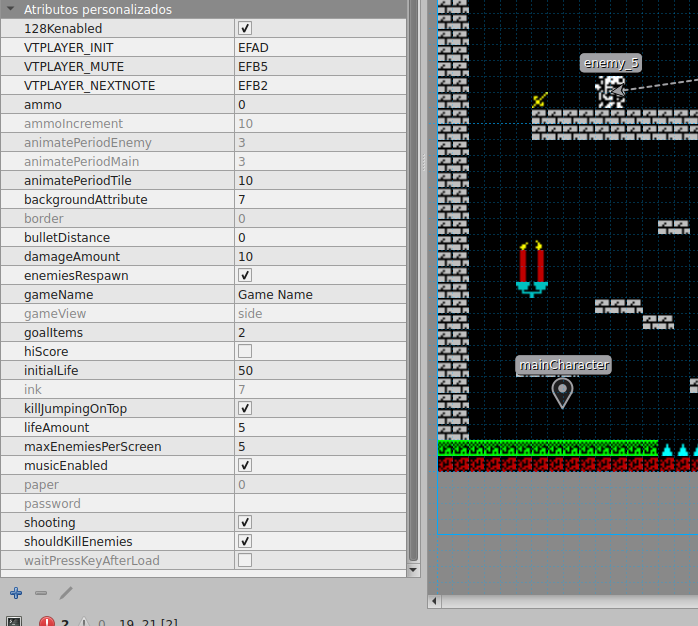

Configuración general heredada de ZX Game Maker
Estas son las propiedades que siguen funcionando de ZX Game Maker
- ammo. Cantidad de munición con la que empezará el personaje principal. Si seteas -1 el personaje tendrá munición infinita.
- ammoIncrement. Cantidad de munición que se recarga cada vez que el protagonista recoja un item de recarga de munición.
- animatePeriodTile. Número más alto, animación de los tiles más lenta.
- arcadeMode. Si esta propiedad está activada el juego se comportará en modo arcade. Puedes ver este comportamiento aqui.
- border. Color del borde in game. Muy útil cuando se cambia el color de fondo del juego y del hud.
- bulletDistance. Distancia que queramos que recorra la bala. El valor 0 se traduce como distancia infinita, la bala no parará hasta que choque con algún obstáculo. Si seteamos una distancia corta como de 2, da el efecto de que el personaje ataca con el arma a corta distancia como una espada.
- damageAmount. Cuánto daño le hacen al personaje los enemigos.
- enemiesRespawn. Si los enemigos (no invencibles) vuelven a aparecer des pués de matarlos al volver a entrar en la habitación.
- gameName. Nombre del juego. Aparecerá en el título loading cuando carga y el tap se generará con este nombre. 10 carácteres como máximo sin carácteres especiales (acentos, ñ...)
- goalItems. Número de items necesarios para finalizar el juego.
- hiScore. Habilita la puntuación in game y el guardado de la misma para que aparezca en la pantalla de menú.
- idleTime. Setea el tiempo a esperar a que el personaje haga la animación idle. Si está a 0 no se activará.
- initialLife. Cantidad de vida inicial del personaje.
- ink. Color de la tinta in game. Muy útil cuando se cambia el color de fondo del juego y del hud.
- itemsCountdown. El marcador de items mostrará el número total de items que tiene que conseguir el jugador al principio del juego e irá descendiendo para que veas los items que te quedan por recoger.
- itemsEnabled. Si no está habilitado no se mostrará el marcador de items.
- jetPackFuel. La cantidad de fuel para el jetPack, se es ditinto de 0 el personaje no saltará y se impulsará con el jetPack.
- jumpType. tipo de salto
- keysEnabled. Si no está habilitado no se podrán usar llaves ni puertas de las que se abren con llaves.
- killJumpingOnTop. Habilita el poder de matar a los enemigos saltando encima. (Solo juego plataformas)
- lifeAmount. Cantidad de vida que incrementa al personaje los items life.
- livesMode. Habilitado tu personaje morirá cada vez que reciba daño perdiendo 1 vida y volviendo al punto donde entró de la pantalla actual. A su vez sólo ganará 1 vida con los items life. Puedes ver este comportamiento aqui.
- mainCharacterExtraFrame. Si está habilitado, la animación del personaje usara el frame extra.
- maxAnimatedTilesPerScreen. Máximo de tiles animados por pantalla.
- maxEnemiesPerScreen. Se puede configurar la cantidad de enemigos que aparecen en pantalla (hasta 5). Evitar poner más de los que se usan para optimizar espacio.
- musicEnabled. Para habilitar o deshabilitar la música AY. Si se habilita la música el juego resultante sólo funcionará en 128K, para hacer una versión 48K tendrás que desmarcar guardar y volver a compilar.
- newBeeperPlayer. Activa el nuevo beeper en el juego para reproducir sonidos.
- paper. Color del papel in game. Muy útil cuando se cambia el color de fondo del juego y del hud.
- password. Password que se pedirá al iniciar el juego para poder jugar. Útil para juegos con más de una carga con sistema de passwords. El password debe ser de 8 caracteres y puede ser alfanumérico, pero no utilices carácteres no ingleses como ñ, acentos...
- redefineKeysEnabled. Habilita la opción de redefinir teclas.
- shooting. Con esto habilitamos o deshabilitamos el disparo del personaje.
- shouldKillEnemies. Con esta propiedad activa, si una habitación tiene enemigos, no podremos salir de ella hasta que los matemos a todos.
- useBreakableTile. Posibilidad de usar tiles que se rompen.
- waitPressKeyAfterLoad. Si habilitas esta opción, tras la carga el juego esperará que pulses una tecla para mostrar el menú.
- backgroundAttribute. Color de fondo del juego
